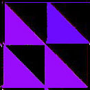

Now, select the red transform and set its color slider all the way to the right.

Now, that's more like it. What the heck just happened? I'll explain in detail in a minute. However, here's Lesson #2: having just one transform colored generally leads to some interesting, symmetric fractals.
Ok, now here are some gory details about thsi particular coloring scheme. First, look at the fractal quilt pictured above. It has a bunch of little Serpinski's triangles in it! Personally, I think that's just awesome. Now, remember back to the previous chapter, when we talked about Multiple Copy Reduction Machines? Apophysis uses MRCM to generate fractals. If you don't remember, take a second to review, because Apophysis colors its fractals exactly the same way.
All right. Here's the basic idea of how Apophysis colors its fractals. It starts out with a base triangle, like the one shown above.

OK. MRCM means that the fractal creates itself by making copies of itself. In this case, on the first step, the base triangle made four copies of itself: Three white copies, and one pink copy. Notice how this second step looks a lot like how the transforms are arranged in the transform editor. Now- remember, the yellow, blue and green transforms have their color sliders set to zero. Doesn't it make sense that the three triangles in the picture on the left are white? Their transforms are telling them that they have no color! However, the red transform has its color slider set to 1. That means it has color! Thus, in the left picture, it's copy has color and shows up pink.
So what about the next step? Well, the fractal copies itself four times.
copies

 copies
copies
copies
The yellow, blue and green transforms make exact copies of the fractal. Remember that their color sliders are set to 0. That means that they can only copy the entire fractal! No changes in color for them, no siree!
copies 
But the red transform, now, that's a different story. It's color slider is set to 1. So what does it do? It colors it's copy of the fractal! Look closely at the copy. The red transform colored the white triangles on its copy of the fractal pink. Then, it colored the pink transform on its copy of the fractal purple!
Now, lets put these copies together.
Tadaa! Now we're getting somewhere. Lets go to the next step, and make another four copies of our fractal.
copies
copies
copies
It's the same story. The yellow, blue, and green triangles make copies of the entire fractal without changing its color. But what does the red transform do?
copies

Once again, it colors its copy! Everything white in the fractal is now pink. Everything pink in the fractal is now purple. And everything purple in the fractal is now blue. So, let's put these four copies together yes?
So, these are the first four steps of coloring an apophysis fractal.
Eventually, you will end up with a quilt!
Well, yes, that's great, you might say. But how does the red transform know how to choose its colors?
This is because the red transform is attached to the Apophyis gradient. Imagine an arrow pointing from the red transform to the gradient. Every time the fractal makes four copies of itself,imagine that this arrow moves slightly right, to a band with a different color. This means that on every step, the red triangle has a new color. As you can see, this causes a sort of ripple effect as aphophysis colors the fractal.
You can actually see this in action. Take the slider for the red transform and set it back to zero. Now, slowly, very slowly, move it to the right, watching the color creep across your fractal. Notice how it starts at the top corner and spreads by throughout the rest of the fractal.
So, that's an explanation of exactly how Apophysis colors your flame. Of course, this is an example with only one transform. However, I usually only color one or at most two transforms on my fractals. Why? Because of this ripple effect. The algorithm will color one transform and it will spread outward from that transform, giving it a very patterned color, which I think is lovely.
So that's apophysis coloring with one transform's color slider set to the right. Let's move a few more color sliders just to see what happens.